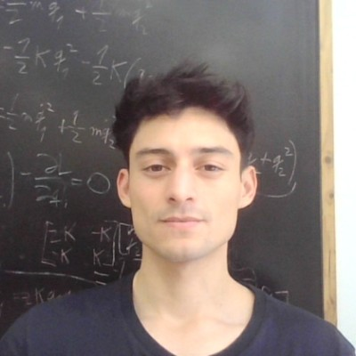
I use this website to publish the projects I have worked on math ∪ compsci ∪ software.
I've worked in scientific machine learning and functional analysis (MSc. thesis), topological data analysis (BSc. thesis), and scientific software development both in PDEs and combinatorics.
"At the beginning of this century a self-destructive democratic principle was advanced in mathematics (especially by Hilbert), according to which all axiom systems have equal right to be analyzed, and the value of a mathematical achievement is determined, not by its significance and usefulness as in other sciences, but by its difficulty alone, as in mountaineering." --Vladimir I. Arnold
2026
Forecasting with ARIMA
(In progress)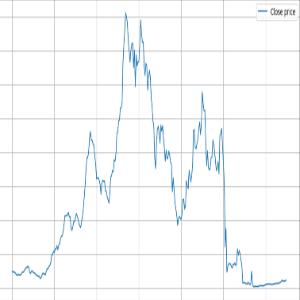
Map Wrapping
(In progress)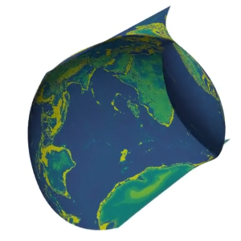
Django Surveys
This project is part of the digitalization process of a health related faculty. I took care of the database design and backbone implementation.
I used class based views, permissions mixin, and forms. The architecture is decoupled i.e. templates do not mess with business logic and queries are handled mostly by models. I put a lot of effort into writing idiomatic django code.
The app consists of Pollsters, Respondents, Surveys, Questions and Answers, as show the entity-relation diagram on the right. I design the database such that common data retrieval queries are efficient i.e. getting all answers to a question.
TODO:
- text in views, right now it is hardcoded and some components can be defined on the models definition.
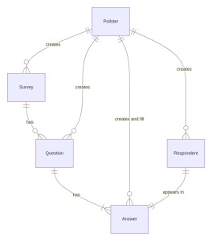
Logistic regression
(Derivation)In this document I introduce the categorization problem from data, and in its formalization an optimization problem arises that give us very naturally the characteristic formula used in logistic regression.
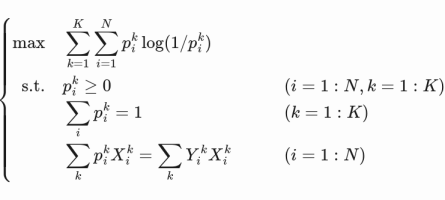
2025
Operator Learning
(MSc Thesis)"Approximation of continuous operators and its application to the operator learning problem" supervised by Ph.D. Federico Fuentes Caycedo.
The usual treatment of operator learning focuses on the amount and quality of training data to maximize identification in the least number of epochs. The objective of this document is to complement the literature by reviewing the theory underlying operator approximation, validating error estimates with numerical experiments and extracting features from approximants. Through the review, we formalized incomplete and unclear proofs, extended results, and propose nuanced questions to guide future research.
The following github repository contains some of the code generated through this thesis.
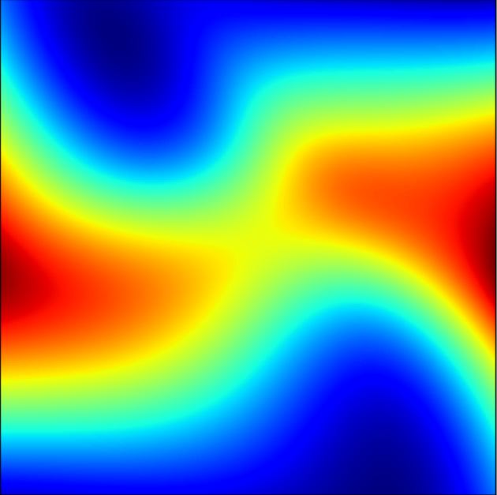
Animaciones de Wasserstein
Final project for the course "Optimal transport" imparted at the faculty of mathematics (PUC) by professor Mircea Petrache.
Inspire by Pixar's paper "Convolutational Wasserstein Distance" I applied optimal transport to the animation task.
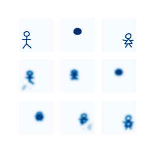
Model View Projection
I propose an intuitive and mathematically rigorous approach to derive the model, view, and projection matrices common in computer graphics.
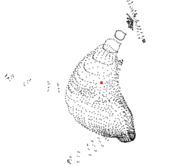
2024
The Heat Method for Distance Computation
This is an implementation (and re-analysis) of the paper Geodesics in Heat
authored by Keenan Crane, Clarisse Weischedel and Max Wardestzky.
The method is implemented in Python using numpy for triangle meshes. It is built upon the discrete laplacian project.
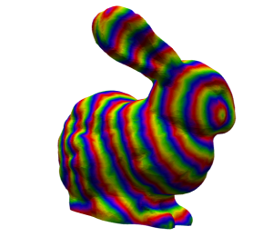
Discrete Laplacian
In this project I solve some problems posed in the
book A dirty introduction to discrete diferential geometry
by Keenan Crane, needed to construct the laplacian for
a triangle mesh.
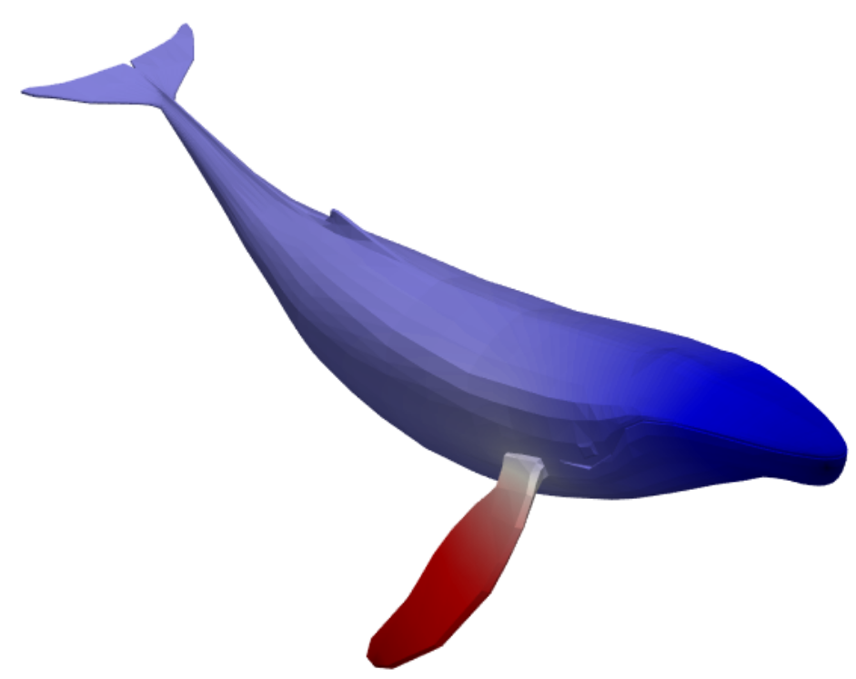
2023
Young tableaux as outer sums
A Young Tableaux is grid of numbers such that every cell is greater than the cell to the right and to the bottom. In this project, I developed and implemented an algorithm to massively compute Young Tableaux that can be represented by outer sums of vectors based on a LP algorithm developed by Colin Mallows and Robert J. Vanderbei.
This project was developed during a winter undergrad research project (roughly a month) at Pontificia Universidad Católica de Chile supervised by Ph.D. Federico Castillo Castillo.
Please refer to the github repository for details.
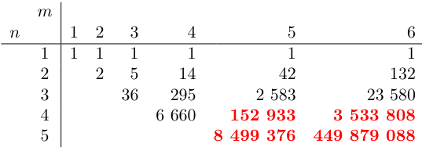
Wave Scattering Through a Ball
Imagine a planar acoustic wave traveling through the air and colliding with a ball fill with water. How does the wave behave on this impact? I derived analytical solutions for this problem.
The document is part of a summer undergrad research project (roughly 2 months) at Pontificia Universidad Católica de Chile supervised by Ph.D. Elwin Van't Wout, and the code is now part of the OptimusLib software for 3D wave scattering.
Please refer to the github repository for details and better visualization, since the conversion to html is not that great.
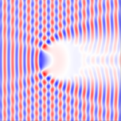
2019-2021
Ray Tracing in One Weekend in C
In this project I implemented in C part of the famous
series Ray Tracing in One Weekend
.
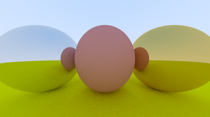
Bitmap library in C
A simple library to create bmp images with multiple header versions. Aimed to my learning process of image processing.
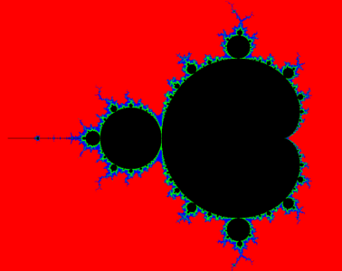